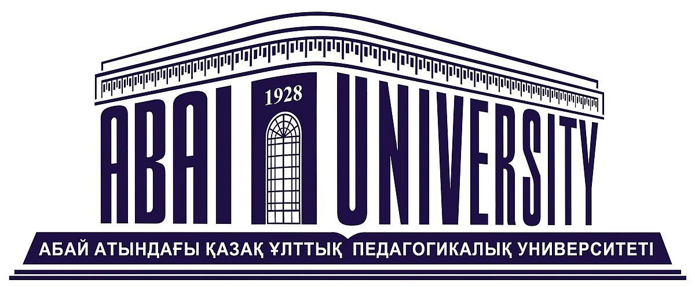

Kazakh National Pedagogical University named after Abai
The first Kazakh higher education institution was established in September 1, 1928 and was named Kazakh State University. Abai Kazakh National Pedagogical University is one of the major higher educational institutions of Kazakhstan. A system of lifelong education has been developed and is almost introduced in the university. Today KazNPU and its subdivisions include 10 faculties. The training of specialists is handled in 60 chairs in 54 specialties. 25 thousand students study in full-time, part-time, distance learning, evening departments of the university. Moreover, there are pre-university departments (1,5 thousand students). Abai KazNPU joined union of European universities (Magna Charta Universitatum). Joining Magna Charta means the participant of the agreement complies with all international standards in the field of education and science, and is one of the most prospective educational and scientific centers of the world.